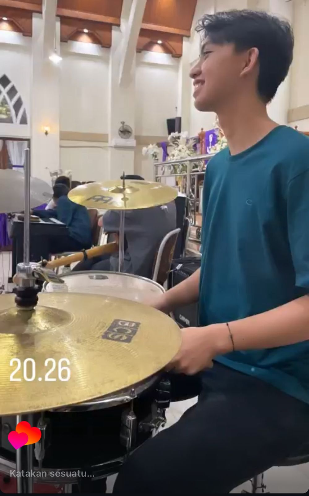

Hey and Welcome... Saya Clayton Wuisan Mahasiswa Informatika
Hopefully this Web is enjoyable...
Please Enjoy my Home Page!!
Personal Hobbies
Informatics

Informatika adalah cabang ilmu yang berfokus pada pengolahan data dan informasi dengan memanfaatkan teknologi komputer. Bidang ini mencakup berbagai aspek, mulai dari pemrograman, pengembangan perangkat lunak, jaringan komputer, hingga kecerdasan buatan dan keamanan siber.
Tujuan utama dari informatika adalah menciptakan solusi yang efisien dan inovatif untuk mempermudah berbagai aktivitas manusia melalui sistem dan teknologi digital. Dalam dunia modern, informatika memiliki peran penting di hampir semua sektor, seperti pendidikan, bisnis, kesehatan, dan industri kreatif, sehingga membuatnya menjadi bidang yang sangat relevan dan dinamis.
Drum's

Drum adalah salah satu alat musik ritmis yang terdiri dari berbagai jenis tabung dan simbal yang dimainkan dengan cara dipukul menggunakan stik atau tangan. Dalam sebuah band atau kelompok musik, drum berfungsi sebagai penjaga tempo dan pemberi ritme,
sehingga seluruh alur musik tetap teratur dan dinamis. Sementara itu, drummer adalah orang yang memainkan drum, dan memiliki peran penting dalam menghidupkan suasana lagu melalui ketukan, dinamika, serta variasi ritmis. Seorang drummer yang handal tidak hanya mampu menjaga tempo, tetapi juga dapat memberikan warna serta energi yang kuat dalam setiap penampilan musik.
Game

Game adalah sebuah bentuk permainan digital yang dirancang untuk hiburan, edukasi, atau simulasi, dan dapat dimainkan melalui berbagai platform seperti komputer, konsol, maupun smartphone. Game bisa memiliki beragam genre, mulai dari aksi, petualangan, strategi, hingga simulasi kehidupan.
Sementara itu, gamer adalah sebutan untuk seseorang yang gemar bermain game, baik secara kasual untuk hiburan maupun secara profesional dalam kompetisi esports. Gamer tidak hanya bermain untuk bersenang-senang, tetapi juga bisa mengembangkan keterampilan seperti berpikir kritis, kerja sama tim, dan pengambilan keputusan yang cepat. Dalam beberapa tahun terakhir, industri game dan komunitas gamer telah berkembang pesat dan menjadi bagian penting dari budaya digital global.